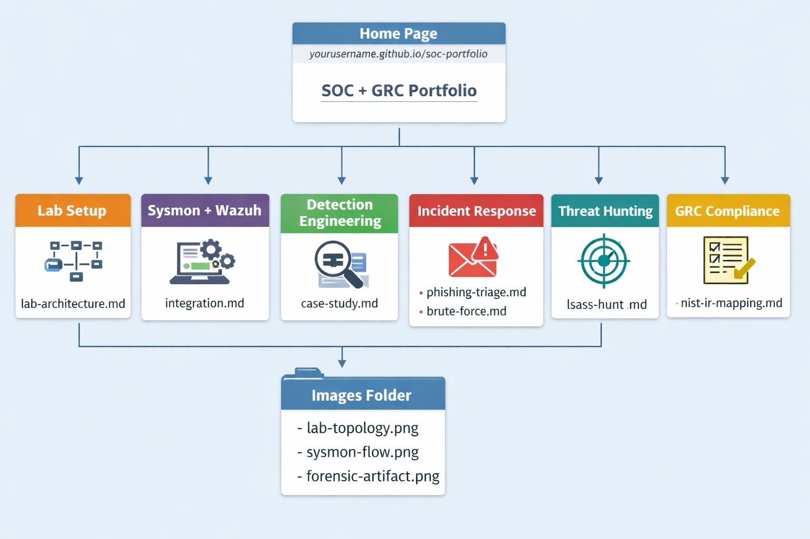

Junior SOC Analyst | Hands-on Detection & Incident Response
Motivated SOC Analyst with practical experience in alert triage, malware analysis, phishing investigation, and building a full home SOC lab using Wazuh, Sysmon & pfSense. Recently completed LetsDefend SOC Analyst path.
Nairobi, Kenya | +254 725 873 673
Founder of Candor Labs — a hands-on SOC environment I built from scratch. Passionate about turning raw logs into actionable detections and helping organisations strengthen their security posture. Ready to contribute as a Tier 1 SOC Analyst in a high-volume environment.

Full home SOC lab architecture using Wazuh, Sysmon, pfSense, Windows 11 & Kali Linux
Integration, log collection & correlation for real-time detection
Custom detection rules for web attacks, brute force & malicious macros
Phishing triage, brute-force investigation & playbooks
lsass memory hunting and proactive threat discovery
NIST IR mapping and control implementation